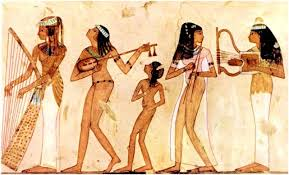
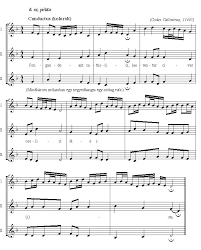

Kialakulása

A zene kialakulása az emberiség hajnalára nyúlik vissza, gyökerei az éneklésben, a ritmikus mozgásban és a mágikus-vallási rítusokban rejlenek.
Az ősember a természet hangjait utánozva, kommunikációs és közösségépítő funkcióval hozta létre az első hangsorokat, ahol a ritmus és az érzelmi kifejezés központi szerepet játszott.
Fejlődése

A zene fejlődése az ősi ritmusoktól és énektől indult, funkcionális szereppel (munka, rítus). Az ókori kultúrák (Mezopotámia, Egyiptom, Görögország) már hangszereket és kottát használtak.
A fejlődés a középkori monofóniától a reneszánsz polifónián át a barokk, klasszikus és romantikus stílusokon keresztül vezetett a modern, sokszínű zenei világig
Hatésa az emberre
A zene jelentősen befolyásolja az emberi testet és elmét: csökkenti a stresszt és a szorongást, oldja a fájdalmat, valamint stimulálja az agyat, növelve a koncentrációt és a memóriát.
A zenehallgatás és az aktív zenélés örömhormonokat (dopamint, endorfint) szabadít fel, segíti a relaxációt, és fejleszti a kognitív képességeket.